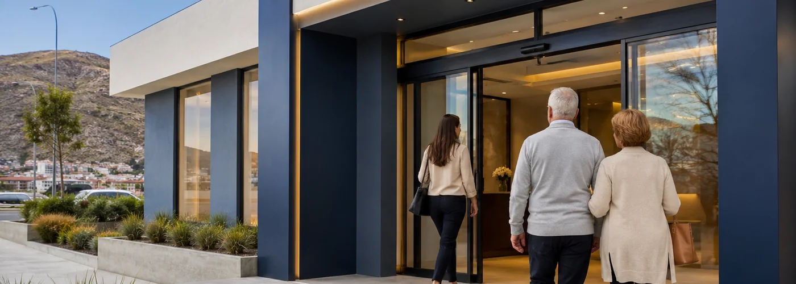
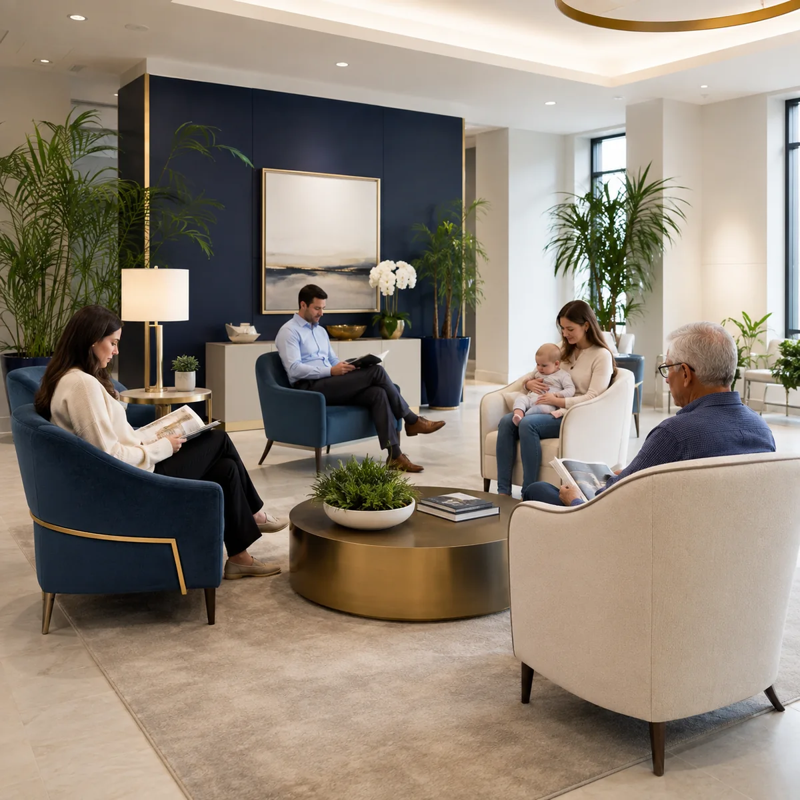

Consulta médica general
Duración aproximada: 30 min
Primera evaluación con nuestro equipo médico para orientar tu tratamiento.
Reservar consulta →
Centro Médico Terapéutico · Comodoro Rivadavia
Consultas médicas, evaluación terapéutica y rehabilitación física, en un mismo lugar pensado para tu recuperación.
01 — Servicios
Elegí el servicio y coordinamos el día y horario por WhatsApp.
Duración aproximada: 30 min
Primera evaluación con nuestro equipo médico para orientar tu tratamiento.
Reservar consulta →Duración aproximada: 45 min
Diagnóstico funcional para armar un plan de rehabilitación a tu medida.
Reservar evaluación →Duración aproximada: 50 min
Sesiones de rehabilitación asistida, acompañadas por nuestro equipo terapéutico.
Reservar sesión →Duración aproximada: 20 min
Control de la evolución de tu tratamiento, con ajustes si hacen falta.
Reservar seguimiento →02 — Tu visita
Entrada accesible, con estacionamiento cercano y señalización clara desde la calle.
En recepción confirmamos tus datos y te acompañamos hasta la sala de espera.
Tiempo dedicado a escucharte y entender qué necesitás.
Sesiones de rehabilitación con seguimiento en cada etapa.

Sobre el centro
El Centro Médico Terapéutico Dr. René Favaloro nació en Comodoro Rivadavia para acompañar a cada paciente con atención médica y terapéutica en un mismo lugar.
Nuestro equipo combina consultas médicas, evaluación terapéutica y rehabilitación física, con un seguimiento cercano en cada etapa del tratamiento.
03 — Dónde estamos
Te compartimos la dirección exacta y ayuda para llegar al confirmar tu turno por WhatsApp.
Consultar direcciónLo que dicen
La atención en recepción fue impecable, me hicieron sentir tranquila desde que entré.
Las sesiones de kinesiología me ayudaron un montón con la recuperación después de la cirugía de rodilla.
Pedí un turno para mi papá y coordinaron todo rapidísimo, muy profesionales.
Preguntas frecuentes
Consultanos por WhatsApp qué obras sociales y prepagas tenemos disponibles.
Depende del servicio — escribinos y te decimos qué necesitás para tu primera consulta.
Sí, coordinamos turnos para cualquier integrante de la familia, incluidos adultos mayores.
Estamos en Comodoro Rivadavia. Te compartimos la dirección exacta al coordinar tu turno.